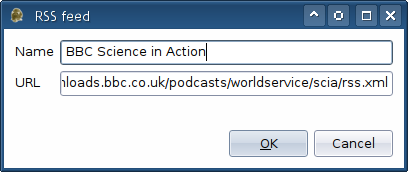

FatRat can watch RSS feeds and add transfers by itself when a new item matches one of your rules. Typical uses are new episodes of a TV show, a podcast, or releases on a torrent site that publishes a feed.
Two things make it work:
A feed without a rule downloads nothing. A rule can also keep track of episode numbers, so that the same episode isn't downloaded twice.
All three front ends manage the same feeds and rules, and they can be open at the same time.
2 to open the RSS tab. It has a Feeds pane and a Download rules pane; Tab switches between them. Changes are saved at once. The two general options are in the settings (O), on the RSS page.The rule dialog needs at least one feed and one queue. On the desktop it does not open without them. The web interface and the terminal tell you to add a feed first.
These two options are on the General tab on the desktop, and on the RSS page of the web and terminal settings:
When checking is turned on, FatRat fetches the feeds right away, and then every interval.
To fetch the feeds now, use Update (desktop), Update now (web interface) or R on the RSS tab (terminal). This works even when automatic checking is off. It uses the feeds that are saved, so on the desktop click OK or Apply first after adding a feed.
To add a feed, click Add on the RSS feeds tab (desktop), Add feed... (web interface) or press N on the feeds pane (terminal). Enter these two fields:

FatRat reads the title, description and link of each item. If an item has an enclosure, the enclosure's URL is used as the link. If it has a magnetURI element, the magnet link is preferred.
If you change a feed's URL, the rules of that feed follow it. If you delete a feed, its rules are deleted too (the terminal says so before it deletes). A feed that can't be fetched or read is reported in the Log as Failed to fetch the feed or Failed to parse the feed.
To add a rule, click Add on the Regular expressions tab (desktop), Add rule... (web interface) or press N on the rules pane (terminal). The fields of the rule are these.
| Field | What it does |
|---|---|
| Feed (desktop: RSS feed) | The feed the rule applies to. A rule only looks at items of this feed. |
| Regular expression (desktop and terminal: Expression) | Matched against the title of each item. It ignores case, and it is enough that part of the title matches. Leave it empty to match every item. |
| Queue (desktop: Destination queue) | The queue the new transfers are added to. |
| Target directory (desktop: Destination directory, terminal: Save to) | Where the files are saved. It starts as the default directory of the chosen queue, and follows the queue as you change it until you edit it yourself. FatRat creates the directory if it doesn't exist. |
| Add paused (web interface: Add the transfers paused) | Adds the transfers paused instead of waiting to start. |
Each rule has a way to test the expression. On the desktop, type a title under Expression test on the Main tab; a tick or a cross shows whether it matches. In the web interface, use Try it on a title; for a rule that tracks episodes it also shows the episode FatRat finds. In the terminal, press T on the rules pane.
All the items that match are added, and an item can match more than one rule. A rule's expression is a regular expression; for example ^Some Show .* 720p matches titles that start with Some Show and contain 720p.
The transfer comment is set to the item's description.
By default a rule downloads the item's main link, which is the magnet link if the feed gives one, otherwise the enclosure or link. Some feeds put the real download links in the description instead. Then choose the link parsing option and enter a regular expression that matches the links. The desktop options are No parsing, use the main link and Extract links matched by the following regexp on the Link parsing tab. In the web interface they are on the Link parsing tab as Use the item's main link and Extract links from the item's description. In the terminal, fill in Link regexp.
FatRat searches the description for every match and adds a transfer for each one. An example expression is http://www.server.com/\S+.
A transfer is added only if one of FatRat's transfer types accepts the link. Otherwise the Log shows The transfer wasn't accepted by any class with the item title and link. Every transfer that FatRat adds this way is logged as Automatically adding a new transfer.
A feed can show the same episode several times, for example in different sizes, as a repack, or on several days. To download each episode once, set the rule's numbering. On the desktop this is the TV show/podcast support tab, and in the web interface the TV show/podcast tab. In the terminal it is the Episodes field.
FatRat reads an episode number out of the item title and remembers it for the rule. An item whose episode was already downloaded is skipped. An item in which FatRat can't find a number is skipped as well.
S01E12 or 1x12. The episode is saved as S01E12.0123. Take care with titles that contain another number before the episode, such as a year. Use the test to see what FatRat finds.2008-04-28. FatRat understands 2008-04-28, 28-04-2008, 04.28.08 and 28 Apr 2008 (with a hyphen, dot or space between the parts, and a month name in English, short or long). It does not read dates written with slashes, such as 4/28/08. When it isn't clear which number is the month and which the day, FatRat guesses by comparing them with the current and the previous month.The From and To fields limit the episodes the rule downloads. Episodes before From or after To are skipped. The fields start as the widest range: S00E00 to S99E99 for season based, 0000 to 9999 for episode based, and 0000-00-00 to 9999-99-99 for date based. To start with a certain episode, enter it in From, written the way FatRat saves it, as above. The web interface labels the fields Download from episode and to episode, and the terminal From episode and To episode.
repack or proper in its title counts as a separate release of the episode. If this is on, FatRat downloads it even though it already has the plain episode. If it is off, such an item is treated as the plain episode: it is downloaded only if you don't have that episode yet. This is on by default for a rule created on the desktop or in the web interface, and off in the terminal.trailer or teaser in its title is skipped unless this is on. If it is on, it is tracked separately from the real episode. It is off by default..torrent file, and its name matches the rule's expression and holds an episode number, FatRat marks that episode as downloaded. It is then not downloaded again from the feed. This is on by default on the desktop and in the web interface, and off by default in the terminal client.Each tracking rule keeps a list of the episodes it has downloaded. You can look at it, add an episode so that it is never downloaded, or remove one to download it again the next time it shows up in the feed.
W on the rules pane. Entries are separated by spaces.An entry looks like the saved episode, for example S01E12. A repack, a proper or a trailer has a suffix such as S01E12|repack, S01E12|proper or 0123|trailer.
FatRat remembers the address of every item that it has seen in the feeds. After each check, the item is on that list, whether it matched a rule or not. So an item is looked at by the rules once only, and a rule you create later doesn't download the items that were already in the feed. If a feed can't be fetched or read during a check, FatRat keeps the earlier list as well.
Episode tracking works on top of that. The same episode can arrive as a different item, with another address, and the list of downloaded episodes stops it from being downloaded again.